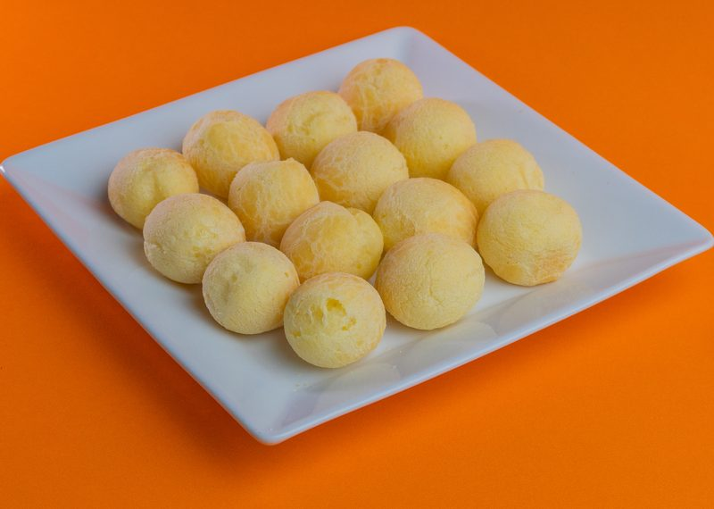

Pao de queijo coquetel (Brazilian Bread of Cheese)

A delicious snack for your family, in a smaller portion for moments where you have visits at home.
Ingredients
- ½ cup olive oil or butter
- ⅓ cup water
- ⅓ cup milk or soy milk
- 1 teaspoon salt
- 2 cups tapioca flour
- 2 teaspoons minced garlic
- ⅔ cup freshly grated Parmesan cheese
- 2 beaten eggs
Steps
- Preheat the oven to 375 degrees F (190 degrees C).
- Combine olive oil, water, milk, and salt in a large saucepan and place over high heat. Bring to a boil and immediately remove from the heat.
- Stir in tapioca flour and garlic, stirring until smooth. Set aside to rest for 10 to 15 minutes.
- Stir cheese and eggs into tapioca mixture until combined; the dough will be chunky, like cottage cheese.
- Drop dough by 1/4 cup-size balls onto an ungreased baking sheet.
- Bake in the preheated oven until the tops are lightly browned, 15 to 20 minutes.